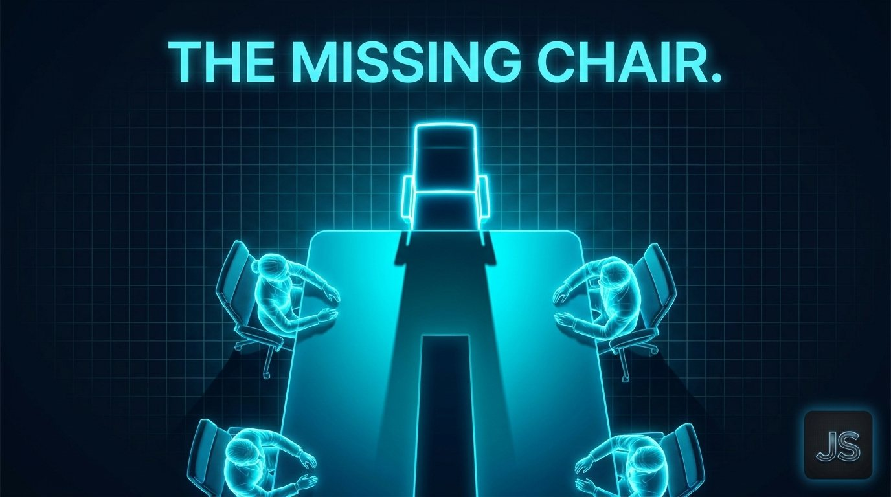
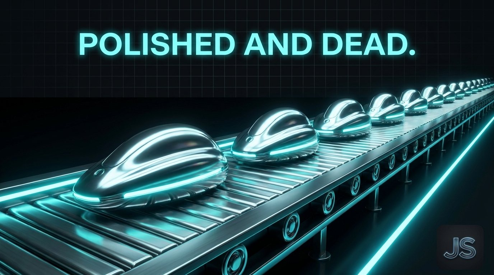

The Creative Shift August 20, 2026
The Missing Chair
The tools got cheaper. The taste didn't.

Walk through most AI-enabled marketing teams right now.
You'll find a workflow lead. An analyst. A media buyer. A prompt engineer.
You won't find the person who knows what good looks like.
What actually happened
Companies bought the tools. Midjourney. Runway. Suno. A dozen agents stitched into a dozen workflows. Output went up. Cost per asset went down. Everyone in the meeting nodded.
Then, quietly, the creative director role got restructured. Or renamed. Or absorbed. Or never filled after the last one left.
The chair sat empty. Nobody noticed for a quarter or two, because the output kept coming.
Then the brand started to drift.
Why the output keeps coming but the work stops landing
Tools have no taste. They produce technically correct output. Composition works. Color balances. Copy scans.
Taste sits in a role. It's the person who looks at technically correct work and says: this is on. This is off. This one lands. This one is wallpaper.
Remove the role, and the output stays polished and dead. QA can catch typos. It can't catch the thing that makes work resonate versus the thing that makes work forgettable.
Photoshop didn't design a logo. Figma didn't design an interface. Your AI stack won't build a brand.

The director is not a luxury
Every era of production tools created the same illusion. Cheaper, faster, more accessible. Therefore the person who directs the work is optional.
Every era of production tools was wrong about that.
Desktop publishing didn't eliminate the art director. Video editing software didn't eliminate the film director. The camera on your phone didn't eliminate the photographer whose work you actually want to look at.
Accessibility went up. The role of the director went up with it, because now everyone could produce and someone still had to decide what was worth producing.
AI is the same story at a bigger scale. Production capacity exploded. The need for a director exploded with it. Companies that read this backward are the ones whose brands are already flattening.
What the missing chair costs
Look at three competitors in your category right now. Pull up their LinkedIn feeds side by side.
If you can't tell them apart in ten seconds, that's the cost.
Category blur doesn't happen because of bad strategy. It happens because nobody in the workflow was holding the line on distinctiveness. The tools pulled everyone toward the aesthetic mean of the training data, and nobody with authority said no.
That's a director problem. Not a tool problem.
What the chair actually does
Sets the visual and verbal standard the workflow has to hit.
Rejects output that clears QA but misses the standard.
Owns the taste layer that gets encoded into prompts, references, and reviews.
Decides what the brand looks like, sounds like, and feels like in every asset that ships.
None of this is optional. All of it disappears the moment the chair goes empty.
The strategic implication
You don't fix this with better tools. You fix it by refilling the chair.
Fractional creative direction. Full-time hire. Retained studio partner. The structure matters less than the fact that someone with taste and authority is in the room when the work gets decided.
Marketing departments that get this right in the next twelve months will own their categories. The ones that keep buying tools without refilling the chair will keep looking exactly like their competitors, and wonder why the pipeline slowed.
One for the road
The tools got cheaper. The taste didn't.
Someone has to hold the standard, or the standard disappears.
Want this kind of thinking on your brand?
The Creative Shift is the thinking behind the client work. If you lead a brand and want this on your side of the table, let’s talk.